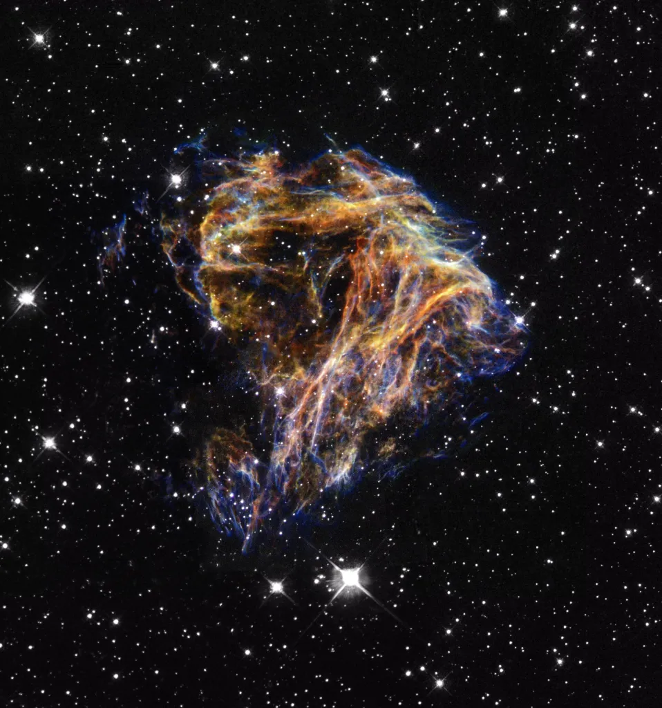
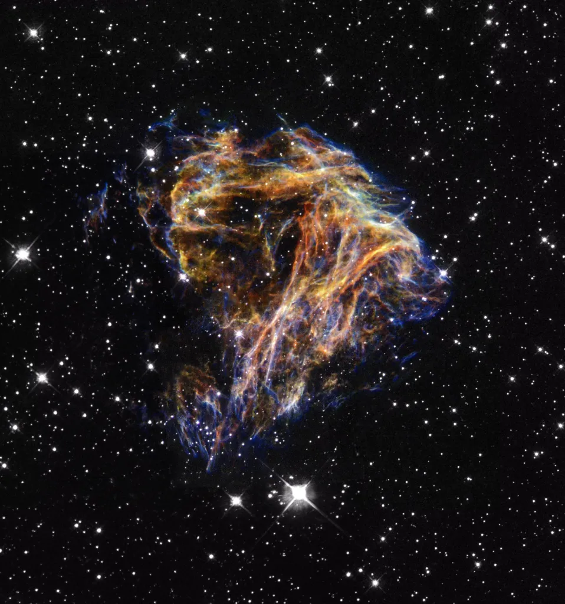

Stars are born in giant clouds of dust and gas called nebulae. Their formation is a fascinating and complex process that has shaped our universe.
Learn More
Discover the different stages a star goes through from birth to maturity. Click on the "Stages" tab above to explore!